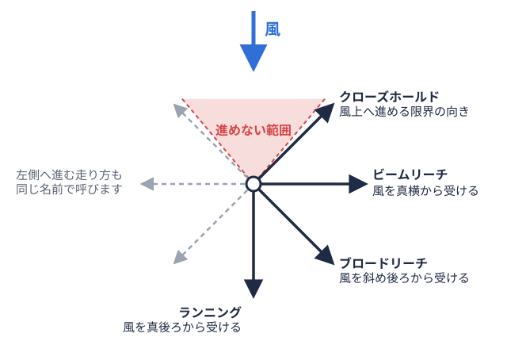

練習 2026-11-26
ヨット部の練習日誌・振り返りノートの書き方｜レース後に残す項目と続け方
練習日誌が役に立つのは「次に試すこと」まで書いたとき
ヨットの練習日誌や振り返りノートは、その日の出来事を書き残すだけでは、あとで読み返しても使いにくくなりがちです。役に立ちやすいのは、「風や水面などの条件」「うまくいったこと・いかなかったこと」「次に試すこと」の3つがそろっているノートです。
この記事は、大学ヨット部で練習やレースを重ねる中で「同じミスを繰り返している気がする」「先輩のように感覚を言葉にできない」と感じている部員に向けて、ノートに残す項目、帰港後の振り返りの進め方、見返し方、続けるコツを整理したものです。書き方に決まった正解はなく、ここで紹介するのは海外のセーリング専門誌が紹介している考え方と、公開されている研究をもとにした一例です。部のコーチや先輩が使っている書式がある場合は、そちらを優先してください。
なお、日本セーリング連盟が練習日誌の公式な書式を定めて公表している、という資料は、今回の調査では見つかりませんでした。このため本記事では「連盟の推奨」とは書かず、あくまで参考情報として扱います。
部員が「振り返り」で困りやすい場面
練習後の振り返りで悩む場面は、おおむね次のようなものが考えられます。
- 練習やレースの直後は覚えているのに、数日たつと風の状況やセッティングが思い出せない。
- 反省点が「スタートが悪かった」「気持ちが弱かった」のような抽象的な言葉で終わってしまい、次の練習で何を変えるのか決まらない。
- スキッパー2人乗りの艇で、後ろ側に座って舵と大きな帆を操作し、進む方向を決める人。
 とクルー2人乗りの艇で、前側に座って小さな帆などを操作し、体重を使って艇の傾きを抑える人。で見ていたものが違い、艇の上で起きたことの認識がそろわない。
とクルー2人乗りの艇で、前側に座って小さな帆などを操作し、体重を使って艇の傾きを抑える人。で見ていたものが違い、艇の上で起きたことの認識がそろわない。 - ノートを書き始めても、忙しくなると続かない。
これらは一般的に起こりうる悩みで、部員全員に当てはまるわけではありません。ただ、ノートの形を少し工夫するだけで、無理なく続けやすくなる場合があります。
海外誌が紹介する「ノートのとり方」の要点
ここでは、アメリカのセーリング専門誌 Sailing World の記事「Note Taking Tune Up」（2017年4月24日掲載）の内容を、参考として紹介します。同記事は、セーリングのレース後の記録のとり方を扱っています（Sailing World「Note Taking Tune Up」）。記事の趣旨は次のように読み取れます。
- 帰港後すぐに、乗組員全員で振り返ることが大切だとされています。小さな艇なら、セール風の力を受けて艇を進ませる布製の帆。艇には大きさの違う帆を組み合わせて使う。
 を下ろしたあと、艤装艇にマストや帆、舵などを取り付け、すぐに走れる状態に整えること。を外す前の数分でも話し合う価値があるという内容です。
を下ろしたあと、艤装艇にマストや帆、舵などを取り付け、すぐに走れる状態に整えること。を外す前の数分でも話し合う価値があるという内容です。 - 書式はチームや個人に合わせて作り、記入しやすくします。艇やセールの情報は事前に書いておき、その場では書く量を減らす工夫が紹介されています。
- 数値にできるものは、できるだけ正確に測って書きます。たとえば「アウトホールをきつめにした」ではなく、ブーム大きな帆の下の辺を支える横棒。帆と一緒に左右へ振れ、方向転換の時は頭の上を通る。の端とクリューの間の距離のように具体的に残す、という考え方です。
- 一つひとつの考えは箇条書きで短くまとめ、数週間後や数年後に素早く読み返せることを重視します。
- 風を数値で言い表せないときは、「安定」「やや振れる」「振れる」のように、自分で決めた言葉を一貫して使います。風向の変わるタイミングと大きさ、潮流も同じように記録します。
- 記録は、風向別や大会別など、あとで探しやすい単位で整理します。大会前やシーズン前に、クルー全員で過去の記録を見直すことが勧められています。
同記事は海外の一般的なヨットレースを想定したものであり、470級全長4.7mの2人乗り競技用ヨット。大きな追い風用の帆とワイヤーを使う。 やスナイプ級2人乗りの競技用ヨット。追い風用の大きな帆を持たず、ワイヤーも使わない。を使う日本の学生大会の運営や、部の練習環境とは異なる点もあります。そのまま取り入れるのではなく、自分の部の状況に合わせて取捨選択してください。
やスナイプ級2人乗りの競技用ヨット。追い風用の大きな帆を持たず、ワイヤーも使わない。を使う日本の学生大会の運営や、部の練習環境とは異なる点もあります。そのまま取り入れるのではなく、自分の部の状況に合わせて取捨選択してください。
ノートに残したい項目のひな型
ここからは、上の考え方をもとに、大学ヨット部の練習日誌に向きそうな項目を一例として示します。すべてを毎回書く必要はありません。続けられる範囲に絞るほうが、結果的にあとで役立つ場合があります。
1. 事前に書いておく欄
練習前や出艇前に書いておくと、帰港後の負担が減ります。
- 日付、場所（海面・ハーバー）、艇種（470級・スナイプ級など）、艇番
- スキッパーとクルーの組み合わせ
- その日の練習テーマ（例: スタート、風上自分の艇から見て、風が吹いてくる側。風上へ進むにはジグザグに走る必要がある。

の上り角度、マーク回航） - 出艇前に確認した天気予報と、風向・風速の見込み
天気図や予報の読み方は、ヨットの気象の読み方・天気図のポイントで扱っています。予報と実際の風の差を毎回書いておくと、その海面の癖が少しずつ見えてくる場合があります。
2. 条件の記録
- 風向・風速（実測の数値があれば数値、なければ自分で決めた言葉で）
- 風の振れ方（安定・やや振れる・振れる、など）
- 波・うねり・潮流の向き
- セッティング（マスト帆を取り付けるために、艇の甲板から垂直に立てた、細長い支柱（棒）。・セール・シート帆を引いたり緩めたりして、帆の開き具合を調整するためのロープ全般。類で調整したところと、その結果）
風向を判断する基本はヨットの風向き判断のコツにまとめています。ノートの言葉をそろえておくと、条件が似た日の記録を探しやすくなります。
3. 出来事の記録
出来事は「いつ・どこで・何が起きたか」を短く書きます。
- スタート: 位置、ラインへの入り方、速度が乗っていたか
- 第1マークまで: 左右どちらを選んだか、その理由
- 回航・タック風を艇の左右どちら側から受けているかを表す言葉。右ならスターボード、左ならポート。
 ・ジャイブ追い風で進むとき、艇の後ろに風を通して向きを変え、帆が反対側へ大きく振れる方向転換。
・ジャイブ追い風で進むとき、艇の後ろに風を通して向きを変え、帆が反対側へ大きく振れる方向転換。 : 失敗や遅れが出た場面
: 失敗や遅れが出た場面 - レース後半: 順位の変化と、その原因として考えられること
スタートの考え方はヨットのスタートのコツ、タッキング風が吹いてくる方向へ進むとき、艇の先を風に向けて回し、帆を張る側を左右反対にする方向転換。とジャイビングの動き方はタッキング・ジャイビングのコツで整理しています。ノートの出来事欄を、これらの記事の項目に合わせて区切っておくと、課題を見つけやすくなります。
4. うまくいったこと・いかなかったこと
ここでは、気持ちや根性の話にまとめず、行動で書くことがポイントです。
- 良くない例:「スタートがだめだった」
- 書き換えの例:「スタートまで残り1分で、ラインまでの距離を見誤り、最後に減速した」
原因を断定する必要はありません。「〜かもしれない」と仮説の形で書き、次の練習で確かめるほうが、思い込みを避けやすくなります。
5. 次に試すこと（1〜3個）
反省点を並べるだけでは、次の練習で何をするのかが決まりません。最後に「次に試すこと」を1〜3個に絞って書きます。たとえば次のように、実行できる大きさにします。
- スタート前の3分間で、ラインへの距離を2回確認する。
- 風が振れた場面では、振れの方向を声に出してクルーと共有する。
数を絞るのは、一度に多くを変えると、どの変更が効いたのか分かりにくくなる場合があるためです。
帰港後の振り返りを5〜10分で進める手順
ノートは、一人で書くより、艇に乗った二人で話した内容を書き留めるほうが書きやすい場合があります。上で紹介した Sailing World の記事も、乗組員全員を巻き込むことを強調しています。
- 手順1: 艇を片付ける前に、スキッパーとクルーが別々に「今日いちばん良かった場面」と「いちばん困った場面」を一つずつ話す。
- 手順2: 二人の話が食い違う点を確認する。同じ場面を別の見え方で話していることがあり、立場によって見ているものが違う可能性があります。
- 手順3: 「次に試すこと」を一緒に決める。
- 手順4: 話した内容を、スキッパーまたはクルーのどちらかが箇条書きで書く。担当を日ごとに交代するのも一つの方法です。
役割による見え方の違いについては、スキッパーとクルーの違いで整理しています。振り返りの場で「相手の席から何が見えていたか」を聞くと、役割ごとの視点を共有しやすくなります。
公開されている研究から、記録の「観点」を考える
日本の公開資料にも、レースの記録の見方を考える材料があります。J-STAGEに掲載された論文（Journal of High Performance Sport、第11巻、79〜89ページ、2023年）は、東京2020オリンピックのセーリング全10クラスを対象に、第1アップウィンド区間（最初の風上に向かう区間）での順位と最終的なレース着順の関係を、公開されているGPSデータから調べたものです（J-STAGEの論文ページ）。
論文の要旨によると、区間を10パーセント刻みで見たところ、レースによっては、スタート直後の順位が最終着順と相関していたとされています。著者らは、第1区間で有利な位置につくことが好成績に重要な役割を果たすと結論づけています。ただし、相関が見られたのは一部のレースであり、すべてのレースに当てはまるわけではない点に注意が必要です。また、対象はオリンピックの競技レベルであり、学生大会にそのまま当てはまるとは限りません。
この研究から、ノートに取り入れられる観点を一つ挙げるなら、「レースの前半でどの位置にいたか」を毎回同じ形で書き残すことです。たとえば次のように、区間ごとの自艇の位置を、およその順位で書き留めます。
- スタート直後: 周りの艇と比べて前・中・後ろのどのあたりか
- 第1マーク: およその順位
- フィニッシュ: 結果
この記録を数レース分ためると、自分たちが「前半で崩れやすいのか」「後半に巻き返しやすいのか」という傾向を、感覚ではなく記録で確認しやすくなります。ただし、数レース程度では偶然の影響が大きいため、断定は避け、「そう見える」程度にとどめておくのが現実的です。
見返す機会を決めておく
ノートは、書くだけでは効果が出にくく、見返す機会を決めておくことで使いやすくなります。
- 練習の前日や朝: 直近2〜3回の「次に試すこと」を確認する。
- 大会の前: 同じ海面で行った練習や、前年の大会の記録を読み返す。
- シーズンの切り替え: 冬季の陸上トレーニングの時期に、1シーズン分のノートを通して見て、よく出てくる課題を3つ程度に絞る。
冬季の過ごし方は、冬のオフシーズン陸トレも参考にしてください。
大会の公式記録とノートを照らし合わせる
自分たちの記録に加え、公開されている大会の結果と照らし合わせると、ノートの内容を客観的に振り返りやすくなります。ヨットマニアでは、全日本学生ヨット連盟の水域全国の大学ヨット部を地域ごとに分けた区分。北海道から九州まで全国に9つある。大会の成績PDFへのリンクを、成績一覧にまとめています。表の構造を解析できた分は、艇順位・大学名・得点をページ内で確認できます。解析できなかった分はPDFへの直リンクのみの掲載です。
たとえば、ノートに書いた「第1マークで中団だった」というレースの最終得点を成績表で確認すると、前半の位置取りと最終的な結果の関係を、自分の記録で見直せます。大会の開催時期は大会カレンダーで確認できます。また、対象の水域は水域一覧から探せます。なお、大学ディレクトリを掲載しているのは関東と近畿北陸のみで、他の水域は大会成績PDFのみの掲載です。
続けるための工夫
ノートが続かない理由は、多くの場合、書く量が多すぎることだと考えられます。次のような工夫で、負担を減らせる場合があります。
- 項目を5つ以内にして、1回あたり3〜5分で終わる形にする。
- 事前に書ける欄（日付・場所・艇番など）は、あらかじめテンプレートに印刷しておく。
- 書く道具を決める。紙のノート、スマートフォンのメモ、共有の表計算シートなど、部で使いやすいものを選ぶ。
- 調子が悪かった日ほど、1行だけでも書く。良い日だけ書くと、記録が偏りやすくなります。
- 部で共有する場合は、書いた内容を責める材料にしない。振り返りの目的は、次に試すことを決めることだと、あらかじめ部内で確認しておきます。
練習日誌でよくある疑問
毎日書かないと意味がないですか
毎日書かないと意味がない、ということはないと考えられます。条件が大きく違った日、新しいことを試した日、レースがあった日だけでも、あとで読み返す材料になります。まずは週に1〜2回から始め、続けられそうなら頻度を増やす進め方もあります。
部で決まった書式があるときはどうすればよいですか
部のコーチや先輩が決めた書式がある場合は、それを使うのが基本です。そのうえで、足りないと感じる項目（たとえば風の振れ方や、前半の順位）があれば、自分用のメモとして足すとよいでしょう。
数値が取れない日はどうすればよいですか
風速計などで測れない日は、自分で決めた言葉を一貫して使います。たとえば「弱い・中くらい・強い」「安定・やや振れる・振れる」など、部内でそろえておくと、他の部員の記録とも比べやすくなります。
まとめ
- 練習日誌は、「条件」「うまくいったこと・いかなかったこと」「次に試すこと」の3点を軸にすると、読み返したときに使いやすくなる場合があります。
- 帰港後に二人で数分話してから書くと、スキッパーとクルーの見え方の違いを共有しやすくなります。
- 書く項目は絞り、数値で書けるものは数値、書けないものは自分で決めた言葉を一貫して使います。
- 前半の位置のような観点を毎回同じ形で記録し、数レース分をまとめて見ると、傾向を確認する材料になります。ただし、数レースでの断定は避けます。
- 大会の成績表や大会カレンダーと照らし合わせると、自分たちの記録を客観的に見直せます。
出典・参考
- Sailing World「Note Taking Tune Up」（2017年4月24日） https://www.sailingworld.com/?p=72177
- Journal of High Performance Sport 第11巻 79〜89ページ（2023年）、J-STAGE掲載ページ https://www.jstage.jst.go.jp/article/jissjhps/11/0/11_79/_article/-char/ja
PR
この部活・競技を応援したい方へ
体育会学生を支援するプラットフォーム「ツナカレ」で、応援できる部活を探せます。
PR
取材してほしい部活を募集中
あなたの部活・大会を取材してほしい方はこちらからご依頼ください。
部活を続けながら、就活も進めたい方へ
体育会の学生のための就活相談です。無料で、メールアドレス・学年・所属の入力だけで始められます。